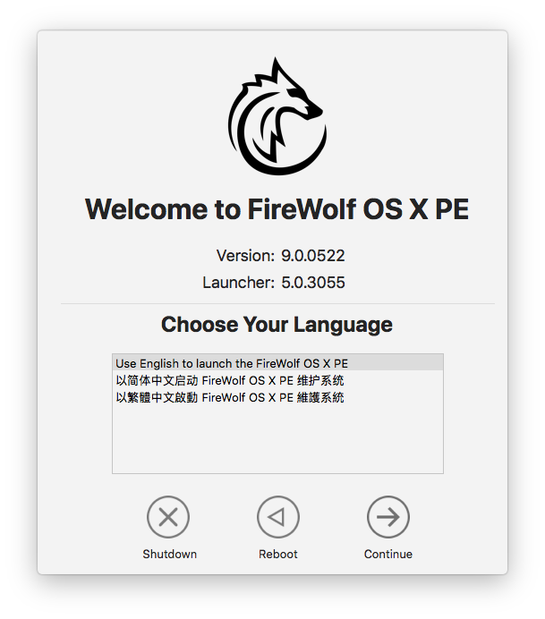
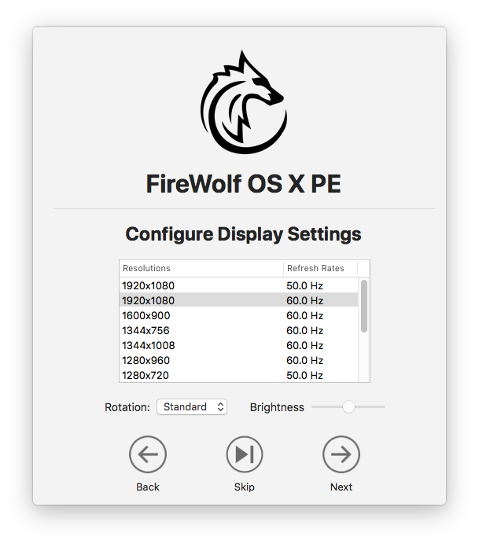
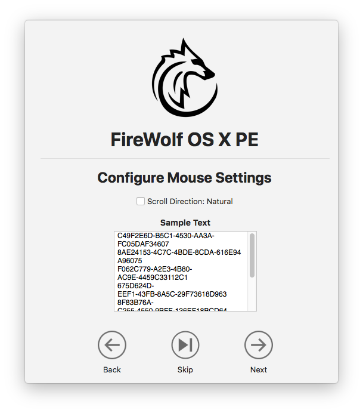
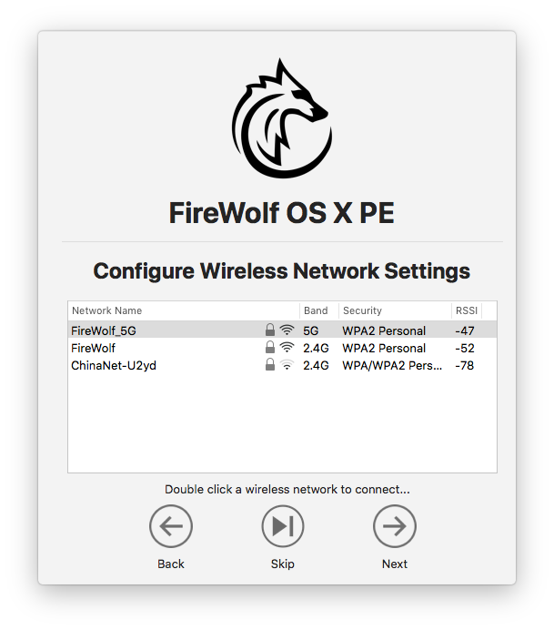
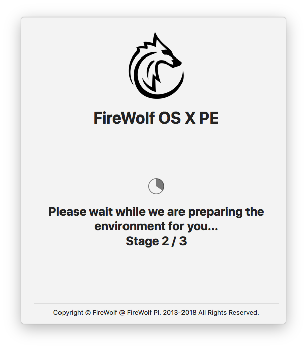

Chapter 3 Start to use
After you choose the language, macOS Utilities comes out.
If you want to restore from your Time Machine backup, choose Restore from Time Machine and follow Apple's instructions.
Double click Start FireWolf OS X PE to start the pre-launcher.
Once the pre-launcher starts, you need to choose a language for PE.
Currently it only supports English, Simplified Chinese and Traditional Chinese.

Click Continue to configure your display settings.
Here you can adjust your screen resolution, brightness and rotation angle.
All screen resolutions shown in the table are supported by the operating system.
This is primarily designed for those who use 4K or 5K displays to avoid tiny text display issues.
If your feel comfortable with your current screen resolution, click Skip to skip this page.

Note that pre-launcher currently does not support configuring HiDPI resolutions. This feature may be added in future release, but you can use the RDM utility later to choose a preferred HiDPI resolution.
Click Next to configure your mouse settings. You can adjust the scroll direction.

Click Next to configure your wireless network settings. If you don't have a wireless card installed on your computer, you won't see this page.

Double click a network and type your password to connect to the Internet.
If you don't need the Internet connection, please click Skip.
The wireless networks list is updated every 10 seconds. If you want to refresh the list manually, right click the table and choose Refresh Networks.
If you need to turn on/off your wireless card, right click the table and choose Turn Wi-Fi On/Off.
Click Next and the pre-launcher starts to prepare the environment for you. Please wait for a while.

After the environment preparation is done, FireWolf MultiApp Launcher, the main launcher, will start.
Now you have entered FireWolf OS X PE.